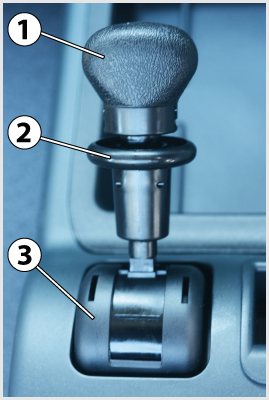

<!DOCTYPE html>
<html lang="hu">
<head>
    <meta charset="UTF-8" />
    <meta name="viewport" content="width=device-width, initial-scale=1.0" />
    <title>Üzemi fékrendszer, rögzítő fékrendszer – „C” kategória - Szerkezeti és üzemeltetési ismeretek</title>
    <meta property="og:site_name" content="KRESZ teszt &ndash; „C” kategória - Szerkezeti és üzemeltetési ismeretek" />
    <meta property="og:description" content="Üzemi fékrendszer, rögzítő fékrendszer kérdések és helyes válaszok („C” kategória - Szerkezeti és üzemeltetési ismeretek)" />
    <link rel="stylesheet" href="../test.css" />
</head>
<body>
    <div class="topic-header">
        <nav class="topic-breadcrumbs">
            <a href="index.html" class="crumb-link">&laquo; „C” kategória - Szerkezeti és üzemeltetési ismeretek témakörei</a>
            <span class="crumb-sep">/</span>
            <span class="crumb-current">Üzemi fékrendszer, rögzítő fékrendszer</span>
            <span class="crumb-sep">/</span>
            <a href="../../index.html" class="crumb-home">Interaktív teszt &raquo;</a>
        </nav>

        <div class="topic-title-section">
            <span class="topic-badge">Témakör 20 / 24</span>
            <h2>Üzemi fékrendszer, rögzítő fékrendszer <small class="topic-badge-info">(18 kérdés, vizsgán: 1 db., 1 pont)</small></h2>
        </div>

        <div class="topic-nav-bar">
            <a href="group-1668681827.html" class="nav-btn nav-prev-btn" title="Sűrített levegő ellátó rendszerek, víztelenítés">&laquo; Előző témakör</a>
            <a href="index.html" class="nav-btn nav-hub-btn">Témakörök listája</a>
            <a href="group-1668682024.html" class="nav-btn nav-next-btn" title="Lassító fékezés, motorfék, motorfékhatás növelés, retarderek">Következő témakör &raquo;</a>
        </div>
    </div>

    <div class="group" id="group-1668681904">
        <div class="questions">
            <div class="question" id="question-704421">
                                                                            <div class="exercise-image">
                                
                            </div>
                                                <!-- <h4>489. Hogyan végzi el a jármű rögzítőfékezését az ábrán látható rugóerő-tárolós fékhenger?</h4> -->
                        <dl>
                            <dt>489. Hogyan végzi el a jármű rögzítőfékezését az ábrán látható rugóerő-tárolós fékhenger? <a href="#question-704421"><small>#704421</small></a></dt>
                                                            <dd class="correct">A rögzítőfékszelep az 1-es jelű hengerből kiengedi a sűrített levegőt (megszünteti a túlnyomást), ezáltal az előfeszített 2-es jelű rugó képes elmozdítani a 3-as dugattyút, illetve a 4-es fékrudazatot.</dd>
                                                            <dd class="">A rögzítőfékszelep sűrített levegőt enged az 1-es jelű hengerbe, amelynek nyomása a 3-as dugattyút és a 4-es fékrudazatot a 2-es rugó ellenében elmozdítja.</dd>
                                                    </dl>
                    </div>
                                                            <div class="question" id="question-704439">
                                                                        <!-- <h4>490. A rögzítőfék-rendszer...</h4> -->
                        <dl>
                            <dt>490. A rögzítőfék-rendszer... <a href="#question-704439"><small>#704439</small></a></dt>
                                                            <dd class="correct">legalább a jármű egy tengelyén található összes kereket fékezi, és képes arra, hogy a járművet tartósan rögzítse, akár a vezető távollétében is.</dd>
                                                            <dd class="">a jármű összes kerekét fékezi, és képes arra, hogy a járművet tartósan rögzítse, akár a vezető távollétében is.</dd>
                                                            <dd class="">a sebességváltó legalacsonyabb fokozatának bekapcsolásával rögzíti a járművet.</dd>
                                                            <dd class="">legalább a jármű egy kerekét fékezi, és képes arra, hogy a járművet tartósan rögzítse, akár a vezető távollétében is.</dd>
                                                    </dl>
                    </div>
                                                            <div class="question" id="question-704440">
                                                                        <!-- <h4>491. Amikor a többkörös légfékberendezés valamelyik fékköre tömítetlen, meghibásodik, akkor a védőszelep...</h4> -->
                        <dl>
                            <dt>491. Amikor a többkörös légfékberendezés valamelyik fékköre tömítetlen, meghibásodik, akkor a védőszelep... <a href="#question-704440"><small>#704440</small></a></dt>
                                                            <dd class="correct">nem engedi leürülni az ép körök légtartályait, sőt lehetővé teszi azok további töltését is.</dd>
                                                            <dd class="">elektromos jelet ad a műszerfalon található fékrendszer figyelmeztető lámpának.</dd>
                                                            <dd class="">működésbe hozza a biztonsági fékrendszert.</dd>
                                                    </dl>
                    </div>
                                                            <div class="question" id="question-704457">
                                                                        <!-- <h4>492. Mi figyelmezteti a járművezetőt arra, hogy a rugóerő-tárolós fékhenger a kerekeket rögzíti?</h4> -->
                        <dl>
                            <dt>492. Mi figyelmezteti a járművezetőt arra, hogy a rugóerő-tárolós fékhenger a kerekeket rögzíti? <a href="#question-704457"><small>#704457</small></a></dt>
                                                            <dd class="correct">A műszerfalon elhelyezett piros fényű visszajelző lámpa.</dd>
                                                            <dd class="">A műszerfalon elhelyezett nyomásmérő műszer mutatója.</dd>
                                                            <dd class="">A rögzítőfékszelep karjának helyzete.</dd>
                                                            <dd class="">Az, hogy a motort nem lehet beindítani.</dd>
                                                    </dl>
                    </div>
                                                            <div class="question" id="question-704468">
                                                                        <!-- <h4>493. Mi a dinamikus fékerőszabályzó rendeltetése?</h4> -->
                        <dl>
                            <dt>493. Mi a dinamikus fékerőszabályzó rendeltetése? <a href="#question-704468"><small>#704468</small></a></dt>
                                                            <dd class="correct">A tengelyterhelés függvényében módosítja a fékerőt.</dd>
                                                            <dd class="">Az útfelület állapotának (száraz, nedves, havas stb.) megfelelően módosítja a kerékfékerőket.</dd>
                                                            <dd class="">Megakadályozza a kerekek blokkolását.</dd>
                                                            <dd class="">Megakadályozza a hajtott kerekek kipörgését.</dd>
                                                    </dl>
                    </div>
                                                            <div class="question" id="question-704502">
                                                                        <!-- <h4>494. Mi történik akkor, ha a rugóerő-tárolós fékhengerekkel működtetett rögzítőfék-berendezés légtartályában, a rögzítőfék oldott állapotában a túlnyomás megszűnik?</h4> -->
                        <dl>
                            <dt>494. Mi történik akkor, ha a rugóerő-tárolós fékhengerekkel működtetett rögzítőfék-berendezés légtartályában, a rögzítőfék oldott állapotában a túlnyomás megszűnik? <a href="#question-704502"><small>#704502</small></a></dt>
                                                            <dd class="correct">A rögzítőfék-berendezés működésbe lép, és befékezi a járművet.</dd>
                                                            <dd class="">Ilyenkor nem lehetséges a jármű rögzítőfékezése.</dd>
                                                            <dd class="">Nehezebbé válik a rögzítőfékkar behúzása.</dd>
                                                            <dd class="">Nem lehet beindítani a motort.</dd>
                                                    </dl>
                    </div>
                                                            <div class="question" id="question-704593">
                                                                            <div class="exercise-image">
                                
                            </div>
                                                <!-- <h4>495. A képen látható rögzítőfékszelep 2-es jelű alkatrésze...</h4> -->
                        <dl>
                            <dt>495. A képen látható rögzítőfékszelep 2-es jelű alkatrésze... <a href="#question-704593"><small>#704593</small></a></dt>
                                                            <dd class="correct">a biztosító gyűrű, melyet fel kell húzni ahhoz, hogy a szelep karja az oldott, illetve a rögzített állásából kibillenthető legyen.</dd>
                                                            <dd class="">működtetőkarba épített féklámpakapcsoló, amelyet akkor kell használni, ha a szelepet menet közben működtetik.</dd>
                                                    </dl>
                    </div>
                                                            <div class="question" id="question-704624">
                                                                            <div class="exercise-image">
                                
                            </div>
                                                <!-- <h4>496. Mikor van szükség a rugóerőtárolós rögzítőfék henger képen látható 3-as jelű oldócsavarjára?</h4> -->
                        <dl>
                            <dt>496. Mikor van szükség a rugóerőtárolós rögzítőfék henger képen látható 3-as jelű oldócsavarjára? <a href="#question-704624"><small>#704624</small></a></dt>
                                                            <dd class="correct">Ha a rögzítőfék a fékrendszer hibája esetén normál módon nem oldható, és a járművet vontatni kell.</dd>
                                                            <dd class="">Ha meghibásodott a rögzítőfékrendszer, de a járművel feltétlenül tovább kell közlekedni.</dd>
                                                            <dd class="">A szükséges rögzítőfék hatás pontos bellításakor.</dd>
                                                            <dd class="">A kerékfékszerkezet hézagának utánállításakor.</dd>
                                                    </dl>
                    </div>
                                                            <div class="question" id="question-704709">
                                                                            <div class="exercise-image">
                                
                            </div>
                                                <!-- <h4>497. Mikor világít a képen bekeretezett visszajelző lámpa?</h4> -->
                        <dl>
                            <dt>497. Mikor világít a képen bekeretezett visszajelző lámpa? <a href="#question-704709"><small>#704709</small></a></dt>
                                                            <dd class="correct">Ha a rögzítőféket behúzták, vagy a rugóerőtárolós rögzítőfék tartályaiban nem elegendő a nyomás annak oldásához.</dd<
a ($   �  b            $ 0"                              �<d& class="">Ha a rögzítőféceT$kht}vták.</dd>
 0 `(           0 `(                   0 `(               b 4Dd clas{=&>Ha az automata váltó meghi"áRodot|.+dd>
                         `  `     $ 0"   " (!             <dd cla{r��>Ha az autkmqva válvûu parkolási helyzetbe$ñnlították.>/le>
         0 `(� !b�       � �b b        �  b         </dl>
                    </div>
                `   " 8!`(                 �0 (     0 `(  <div class=&qegstionb iE="questioj-'04?35">
   ! �         ! �                      ! � ! �        " (!             <!-- <h4>498> 
a a légfékrendsze2beO található főf�)ks8elep (pedálszelep) feladata?|/h>!-�>
       �  b   `        l�	
0 `(        8 @- �          <dt>498. Mi a lC�c$ӯkbgndszerben található főfǩ{qzelep (pedálszelep) felalaTe? |a Iref="#questio.-?�3p5"><small>#704725</sm`l�></c>4.dt>
 0"   0 `( $ 0"              �  b       �  b( $   $ 0"    "<ld �l�ss"corre#t"A járművezetőnek a fékpedálra gyakorolt láberejével arányos nyomású sűrített levegőt vezérel ki az üzemi fékkörökbe.</dd>
                                                            <dd class="">A rözítőfék oldására szolgál.</dd>
                                                            <dd class="">A pótkocsira kivezérelt üzemi féknyomást állítja be.</dd>
                                                    </dl>
                    </div>
                                                            <div class="question" id="question-704873">
                                                                        <!-- <h4>499. Ha a kétkörös légfékberendezés egyik fékköre megsérül akkor...</h4> -->
                        <dl>
                            <dt>499. Ha a kétkörös légfékberendezés egyik fékköre megsérül akkor... <a href="#question-704873"><small>#704873</small></a></dt>
                                                            <dd class="correct">a másik fékkörrel a gépjármű fékezhető, de a fékút hosszabb lesz.</dd>
                                                            <dd class="">a másik fékkör levegőt enged a sérült fékkörbe a levegővesztés pótlására.</dd>
                                                            <dd class="">a másik fékkör átveszi a sérült fékkör feladatát és nagyobb erővel fékez, hogy a jármű előírt fékhatása teljesíthető legyen.</dd>
                                                            <dd class="">a másik fékkörrel a gépjármű fékezhető marad, de csak egy alkalommal, mert az utántöltése ennek a fékkörnek is megszakad.</dd>
                                                    </dl>
                    </div>
                                                            <div class="question" id="question-704874">
                                                                        <!-- <h4>500. Mit jelez a két légnyomásmérő-műszer a kétkörös légfékber%nlDZǩssel ellÁt�dt gépjápmͰ m��jerfalán?</h4> -->
 ( $ �  b           " (=dl<
!        ! �               <dt>500. Mit jmlE~ a két lùg.qomármG�rő-műszer a k��tJörös légfékbwr-gdezéssele�|ӡ4gtt 'éQjármű műszerfalán? >a(iref5"uuestion-704874"><smglt=#704874</sm`l�></a></dt>	
0"                                      �  b              " 4ed�cl#ss="correct">Az egyik műszer az első a másik a második üzemi fékkör tartálynyomá{Áp mu�at(a. KétMu�qtós m��cpdrek esetén a piros mutató a fө+mxřoyomást, a �eh��r vagy fekete lt�e|��$a tAr�ӡlynoyeÁwt jelzi.</dd>
         �  b                 �0        0 `(!0�`�0  0 `(   8d�"c.ass="">Az egyik nyoM�!cmérő-műszer az üzeii0d��kJôr˷k kivezC�r'lt nyomását, a mǡckk pedig a rugóerđ��!bolós rögzítőfék és a segëdc¶r tartálynyomását�mu6atja.</dd>
`                      $(0$              �0    0 `(      <dd claws- ">Ax mfyik nyomásmérő-műszer a vontat㳭< a másik a pótkocsi tölt呭0és fékezőkör nyomását jelzi vissza.</dd>
                                                            <dd class="">Az egyik műszer a kompresszor, a másik a féklégtartályok nyomását mutatja.</dd>
                                                    </dl>
                    </div>
                                                            <div class="question" id="question-704875">
                                                                        <!-- <h4>501. Mi a légfékrendszerben található relészelep feladata?</h4> -->
                        <dl>
                            <dt>501. Mi a légfékrendszerben található relészelep feladata? <a href="#question-704875"><small>#704875</small></a></dt>
                                                            <dd class="correct">Az időkésedelem csökkentése.</dd>
                                                            <dd class="">A jármű terhelésének megfelelően változtatja a kerékfékszerkezethez kivezérelt nyomást.</dd>
                                                            <dd class="">Az egyik fékkör kiesése esetén biztosítja, hogy a járművel biztonságosan meg lehessen állni.</dd>
                                                    </dl>
                    </div>
                                                            <div class="question" id="question-704876">
                                                                        <!-- <h4>502. Milyen rögzítőféket alkalmaznak általában a légfékrendszerrel ellátott haszongépjárműveknél?</h4> -->
                        <dl>
                            <dt>502. Milyen rögzítőféket alkalmaznak általában a légfékrendszerrel ellátott haszongépjárműveknél? <a href="#question-704876"><small>#704876</small></a></dt>
                                                            <dd class="correct">Rugóerőtárolós munkahengerrel működtetett rögzítőféket.</dd>
                                                            <dd class="">Rudazattal m��z�2dtetett hidrau�ik7s s�2gzítőféket.</dd>
 $ 0"     �0              ! �        " (% 0" `           <dd class=""A�{ard��nU%ng�ly0e lad�� Eobfékes rögzítőféket.</dD>�  �` "           �0        �0    0 `(        0 `(    �  ~l$gMass="">qzPnl�l /űkdtetetu �echaNi�es rögzǭdǑféket><old>
                                           0 `8 `(  </dl>
               $ 0" </div>
     �  b                                             0 `(  <div class="question" id=�qu'stion-714645">
                                       " (!      $ 0"    �  b               <div class="axupcise-image">
   `            0 `(          0<)eg src="../../data/asset/23972.�`g" />
        (   0"    0 `(     <-daw>
 $�0                  (",!          $ �" v p*  <!-- <h4>503. A kө0mn látható 3-as jelű aloadpész...</h4> -->
                        |el�
           $ 0"             <dt>503. A kéxeN$látható 3-as jelő �|katrész... <a href=&#awestio.-7424% ><sma�l>a714645</s-alM><'a~</Et6
*$   ( $                           $ 0"   `                <dd class="corVe�f">a rugóerőtárolów b��gzítőfék henger oldócsavarja.</dd>
       �  b                           0 `(  $ 0# �     " (! <dd clas3=">a puo³erővés�lG�c 2˶gzít��v��kc¶r vI��w��lócca4dakozója.</fd6
       "` !!$     "�(�b b             �0`  $              <dd class="":a0pugóerőtárol³� rögzítőfék ie��erbNy�}ˠsérzékelője.</dd>
                            0 `(  `   ! �   ( $   </dl>
                   �?Dmv>
                    ! �               0 `(                  <div clacs}*question"�id"question,7�4646">
           @ �     $ 0"                                                <!-- <(4>04. A ruw��mrűtC�rml˲c 2˶gz˭D��nék kézIj��jának behúzott (rögzítept9"á�l��sában...<.h�> -->
                  ( $  <dl>
    �0�                    <dt>0�> C ztgóerőtároló� r��gzítŐfG�k kézikarjának behúzott 8r��gzýt%\t�0állásában... ,a�`r'f="#question-71464&"~4small>#714�46~/small></a></dt>
                                                            <dd class="correct">a nagynyomású levegő eltávozik a rugóerőtárolós munkahengerekből és a rugók ereje rudazaton keresztül befékezi a kerekeket.</dd>
                                                            <dd class="">a nagynyomású levegő a rugóerőtárolós fékhengerekben a rugót összenyomja.</dd>
                                                            <dd class="">nagynyomású levegő jut a rögzítőfék munkahengerekbe és működésbe hozza a kerékfékeket.</dd>
                                                    </dl>
                    </div>
                                                            <div class="question" id="question-714667">
                                                                            <div class="exercise-image">
                                
                            </div>
                                                <!-- <h4>505. Hány üzemi fékköre van az ábrán látható légfékrendszernek?</h4> -->
                        <dl>
                            <dt>505. Hány üzemi fékköre van az ábrán látható légfékrendszernek? <a href="#question-714667"><small>#714667</small></a></dt>
                                                            <dd class="correct">Kettő.</dd>
                                                            <dd class="">Egy.</dd>
                                                            <dd class="">Egy a vonatató és egy a pótkocsi részére.</dd>
                                                    </dl>
                    </div>
                                                            <div class="question" id="question-714668">
                                                                        <!-- <h4>506. A kétkörös légfékberendezés egyik fékkörének hibája esetén mi iktatja ki a hibás fékkört és védi meg az ép kört, lehetővé téve annak további töltését is?</h4> -->
                        <dl>
                            <dt>506. A kétkörös légfékberendezés egyik fékkörének hibája esetén mi iktatja ki a hibás fékkört és védi meg az ép kört, lehetővé téve annak további töltését is? <a href="#question-714668"><small>#714668</small></a></dt>
                                                            <dd class="correct">A védőszelep.</dd>
                                                            <dd class="">A relészelep.</dd>
                                                            <dd class="">A fékvezérlő szelep.</dd>
                                                    </dl>
                    </div>
                                                            <div class="question" id="question-714669">
                                                                        <!-- <h4>507. Hogyan érzékeli a jármű terhelési állapotát a légfékrendszerben található dinamikus terhelésfüggő fékerőszabályozó?</h4> -->
                        <dl>
                            <dt>507. Hogyan érzékeli a jármű terhelési állapotát a légfékrendszerben található dinamikus terhelésfüggő fékerőszabályozó? <a href="#question-714669"><small>#714669</small></a></dt>
                                                            <dd class="correct">Mechanikus rugózású járműveken a rugók összenyomódását, légrugózású járműveken a légrugónyomást érzékeli.</dd>
                                                            <dd class="">A relészelep által előállított nyomást érzékeli, amely arányos a jármű terhelési állapotával.</dd>
                                                            <dd class="">A jármű fékezése során a dinamikus átterhelődésből adódó bólintást érzékeli.</dd>
                                                            <dd class="">A vezetőnek kell a fékerőszabályozó kézikarján beállítani a jármű terhelési állapotát.</dd>
                                                    </dl>
                    </div>
                                                            <div class="question" id="question-721206">
                                                                        <!-- <h4>508. A rögzítőfék old, ha a rögzítőfékszelep működtető karját elfordítva...</h4> -->
                        <dl>
                            <dt>508. A rögzítőfék old, ha a rögzítőfékszelep működtető karját elfordítva... <a href="#question-721206"><small>#721206</small></a></dt>
                                                            <dd class="correct">a rugóerő-tárolós fékhengerbe - a rögzítőfékszelepen át - a légtartály felől beáramló sűrített levegő a dugattyú (vagy membrán) közvetítésével a működtető rugót összenyomja.</dd>
                                                            <dd class="">a szelep a rugóerő-tárolós fékhengerekből kiengedi a sűrített levegőt.</dd>
                                                    </dl>
                    </div>
                                                            <div class="question" id="question-721208">
                                                                        <!-- <h4>509. A rugóerőtárolós rögzítőfék kézikarjának előre tolt (fék oldva) helyzetében...</h4> -->
                        <dl>
                            <dt>509. A rugóerőtárolós rögzítőfék kézikarjának előre tolt (fék oldva) helyzetében... <a href="#question-721208"><small>#721208</small></a></dt>
                                                            <dd class="correct">a nagynyomású levegő a rugóerőtárolós fékhengerekben a rugókat összenyomja.</dd>
                                                            <dd class="">a rugóerőtárolós fékhengerekből a levegő eltávozik a szabadba, így a kerékfékszerkezetek oldanak.</dd>
                                                            <dd class="">a rugóerőtárolós fékhengerekből a levegő eltávozik a szabadba, így a rugók oldani tudják a kerékfékeket.</dd>
                                                    </dl>
                    </div>
                                    </div>
        </div>
    </div>

    <div class="topic-footer-nav" style="margin-top: 40px;">
        <div class="topic-nav-bar">
            <a href="group-1668681827.html" class="nav-btn nav-prev-btn" title="Sűrített levegő ellátó rendszerek, víztelenítés">&laquo; Előző témakör</a>
            <a href="index.html" class="nav-btn nav-hub-btn">Témakörök listája</a>
            <a href="#top" class="nav-btn nav-top-btn" onclick="window.scrollTo({top:0,behavior:'smooth'}); return false;">^ Tetejére</a>
            <a href="group-1668682024.html" class="nav-btn nav-next-btn" title="Lassító fékezés, motorfék, motorfékhatás növelés, retarderek">Következő témakör &raquo;</a>
        </div>
        <p style="margin-top: 24px; text-align: center;"><a href="index.html" class="back-btn"><strong>&laquo; Vissza a „C” kategória - Szerkezeti és üzemeltetési ismeretek témaköreihez</strong></a></p>
    </div>

    <script src="../search.js"></script>
</body>
</html>